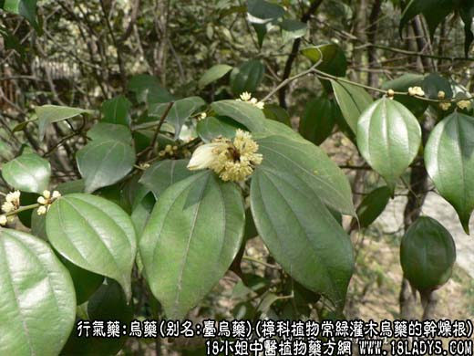
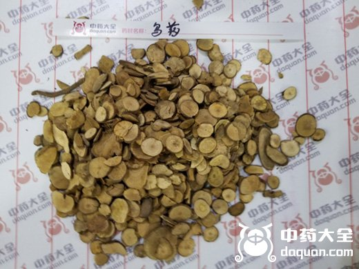
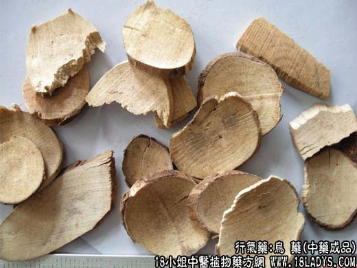
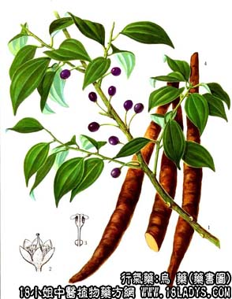

本品为常用中药。始载《开宝本草》。
别名：台乌药。
来源：为樟科植物常绿灌木乌药的干燥根。多为野生。
产地：主产有浙江、湖南以及安徽、湖北、江苏、福建、广东、广西、台湾等地。
性状鉴别：乌药个多为纺锤形，略弯曲，中部膨大，两端稍细尖，俗称“乌药瓜”。长10～20厘米，直径1～3厘米。表面棕色或灰棕色。有细纵纹及须根痕。质坚硬，不易碎断。横断面淡黄棕色，中心无髓，显放射状纹理及环纹。气微香。味微苦。本品多在产地趁鲜加工切片，有薄片、厚片和不规则的砍片三种。
1、薄片切制前刮去外皮，横切为圆形片，片薄如纸，厚在1毫米。
2、厚片不去外皮，横切为圆形片，片厚约1～5毫米。
3、砍片不去外皮，多横或斜切砍成厚薄不一，大小不等的片块。
乌药个以根呈纺锤形，质嫩肥大者为佳。乌药片习惯认为浙江产的薄片最好。
主要成分：含挥发油，其中有乌药烷、乌药烯、乌药醇等。
功效与作用：行气止痛，现已证实有健胃驱风、促进肠蠕动作用。效力比木香稍强。
炮制：切片生用。
性味：辛，温。
归经：入尾、肾经。
功能：舒气、温中、散寒、止痛。
主治：胸胁胀痛，脘腹冷痛，反胃吐食，小便频数，上气喘急等症。
临床应用：前任认为本品“不刚不燥”，且镇痛作用较强，能“通理上下诸气”。现代广泛用于由气滞、气逆引起的腹部痛证，尤以治下腹胀痛效果更佳。
1、治腹部疼痛。脐腹疼痛而有肠鸣或便糖者适宜（属寒痛，可见于胃肠肾经官能症或肠粘结连引起的轻度梗阻等），可用乌药配香附、如香乌散，或配木香、沉香、陈皮、厚朴、苍术、炒麦芽等同用，名排气汤。该汤有排气止痛作用，经动物实验证实其原理在于使肠收缩力加强，蠕动加快，从而有助于排气止痛，方中的主要有效药物是乌药和木香。
2、治寒疝。小肠疝气痛、附睾炎等牵涉至脐腹作痛者，可用乌药配理气祛寒药，以行气散寒而止痛，方如天台乌药散。
3、治小便频数而属虚寒者，配益智仁等分，以山药糊丸如梧桐子大，第服6g，每日2~3次，温开水送服。
4、治气滞引起的月经痛，如为月经后期疼痛，如为月经后期疼痛，配沉香、延胡索、当归、肉桂；如为经前腹痛，则常配木香、砂仁、香附。
此外，对腹泻患者如泻后有隐痛，在方剂内加入乌药一味有助于止痛；又乌药亦试用于治脉管炎、冠状动脉硬化性心脏病引起的心前区痛，可配毛冬青、鸡血藤、当归、川芎、条芩、银花等药，初步观察，有一定止痛效果。
用量：3～12g。
处方举例：1、香乌散。香附、乌药等分为末，第服3～6g治腹痛。如腹痛兼食欲不振，以姜、枣汤送服；如为虫积腹痛，以槟榔汤送服；如为下腹痛或疝痛，以小茴香送服；治头风虚肿，用茶汤送服。
2、天台乌药散（《医学发明》）：台乌9g，广木香3g（后下）、小茴香4.5g，青皮6g，良姜4.5g，槟榔9g，川楝子9g，水煎服。